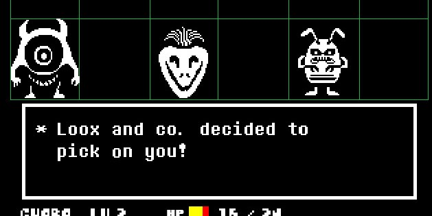
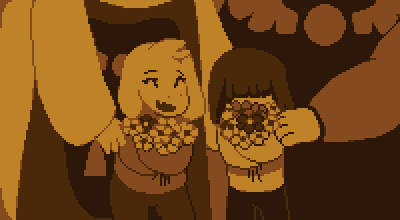

Un poco de música para disfrutar
Undertale es un juego "indie"(creado de forma independiente) por el usuario Toby Fox, el cual creo por su cuenta todo el juego, incluyendo las mecánicas, la música la historia, etc. Es un juego con estilo de arte pixel art y de tipo RPG en el cual tomamos el papel de un humano caído en un mundo de monstruos. Aquí los monstruos tienen el poder de usar magia para atacarnos, pero nosotros poseemos un poder que solo los humanos poseen, DETERMINACIÓN, el cuál reside de nuestra alma y es como una fuente de energía casi infinita permitiéndonos persistir incluso después de la muerte.
Este juego destaca bastante en cuanto a su jugabilidad, basándose en el típico formato de "combate por turnos" y teniendo la peculiaridad de decidir si queremos luchar o ser pacifistas con los diferentes enemigos que aparezcan a lo largo de la travesía, esto nos da la posibilidad de montones de interacciones con los enemigos, algunas simples y otras algo más alocadas.
El caso es que cuando logramos caerle bien a los monstruos nos dan la opción de Perdonarlos en un apartado del menú de peleas que dice PIEDAD. Aunque, también puedes decidir no contenerte con ningún monstruo y atacarlos sin piedad, consiguiendo EXP y LV (cabe recalcar que en este juego estos términos tienen un significado diferente al que pensamos) y que será algo importante cerca del final.
En cuanto al mundo, es uno creado a base de pixeles tipo RPG donde podemos encontrarnos diferentes objetos que aumentan nuestra fuerza y defensa o sirven como curación, existiendo bastantes de estos por todo el juego.
Como se mencionó, este juego tiene la posibilidad de decisión, algo que no se ve comunmente, dandonos la posibilidad de multiples finales, siendo principalmente 3 y uno de ellos tiene multiples variales.
Pero además este juego tiene una de las mejores historias y posiblemente de las más memorables en el mundo de los juegos Indie; teniendo momentos tristes, divertidos, buenos enfrentamientos, personajes carísmáticos o trágicos, etc.
Así que en esta ocasión preparense y espero que esten DETERMINADOS a seguir porque aquí te presento un poco de información sobre Undertale.